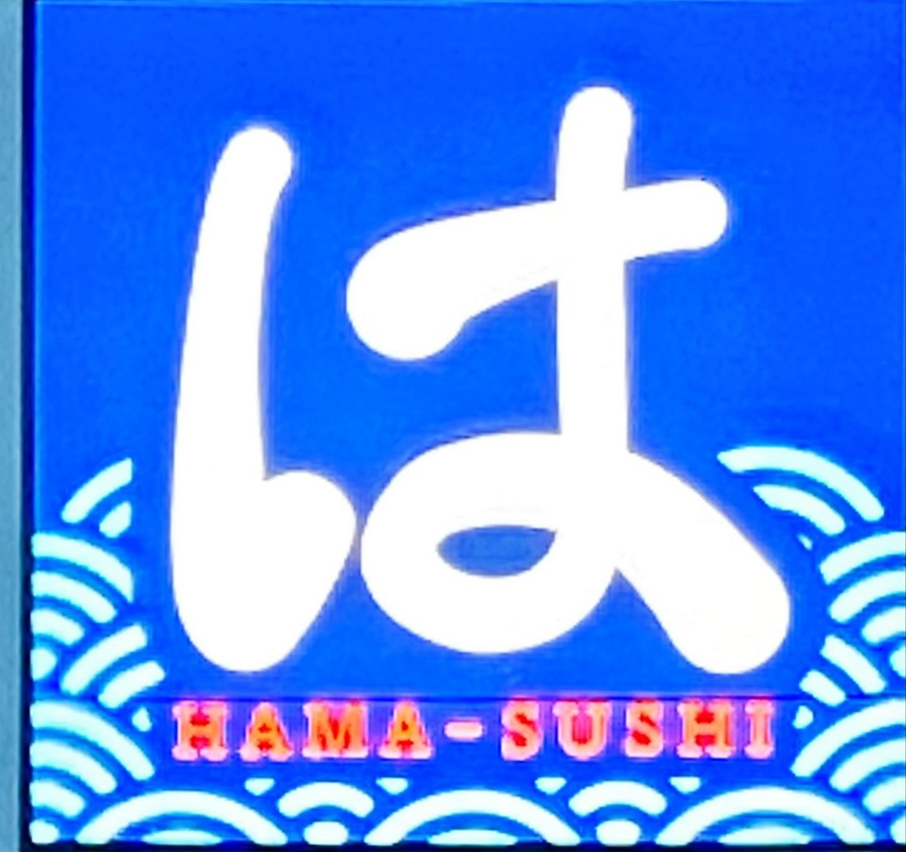
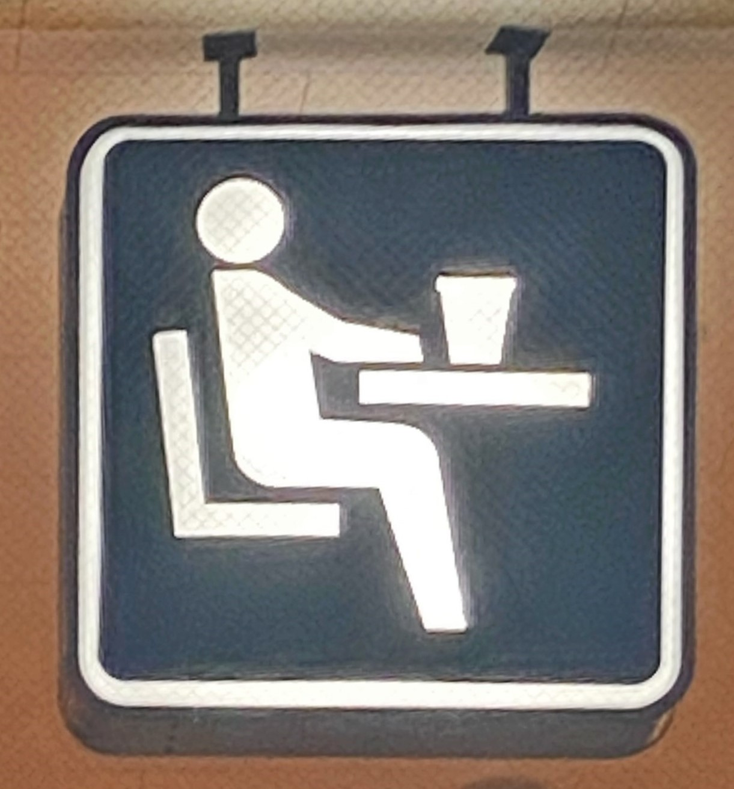

- 1文字で分かる看板

撮影日：2021年10月10日(土）場所：東京 撮影者：自分
この写真は最近地元にできたはま寿司の看板です。
なぜこの看板が「は」なのか疑問に思い撮りました。
なぜこの看板が「は」なのか疑問に思い撮りました。
- 特徴的なロゴがある看板

撮影日：2021年10月10日(土）場所：東京 撮影者：自分
この写真は最寄り駅の近くにあるTUTAYAの看板です。
ロゴが可愛かったから撮りました。
ロゴが可愛かったから撮りました。
- ピクトグラムでできた看板

撮影日：2021年10月10日(土) 場所：東京 撮影者：自分
この写真は地元のファミリーマートの休憩所の看板です。
ピクトグラムと背景の色が面白いなと思いました。
ピクトグラムと背景の色が面白いなと思いました。